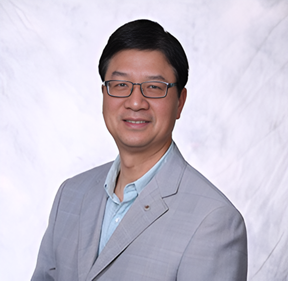
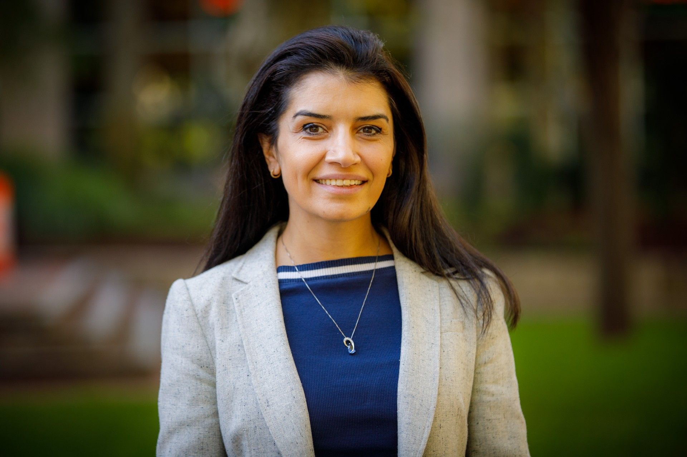
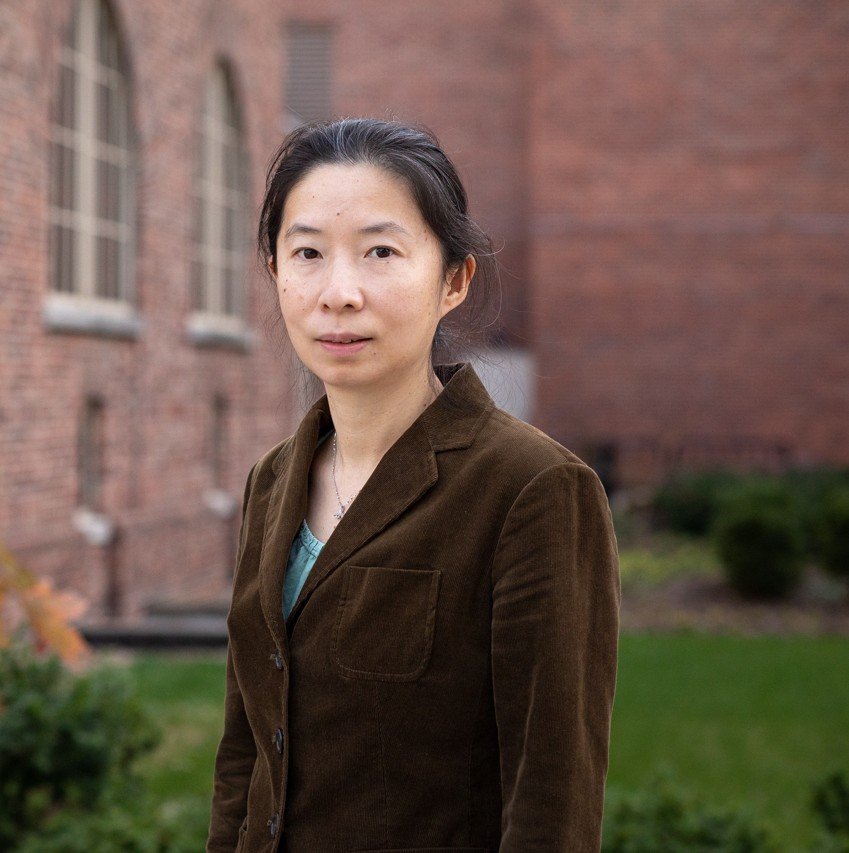
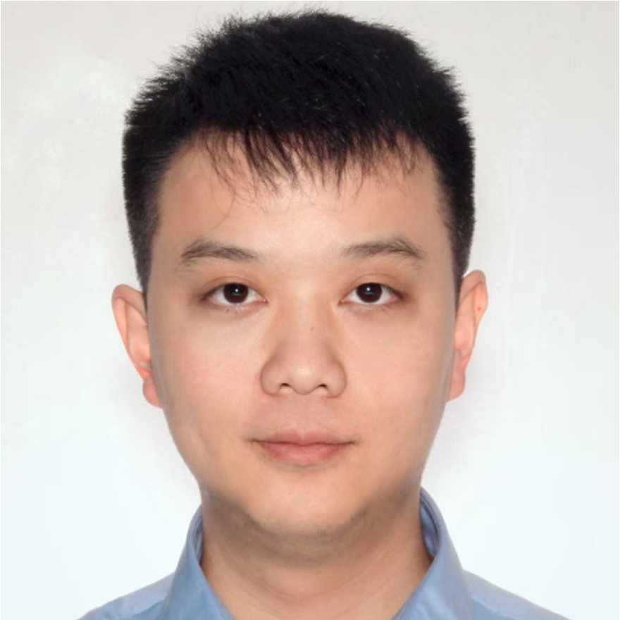
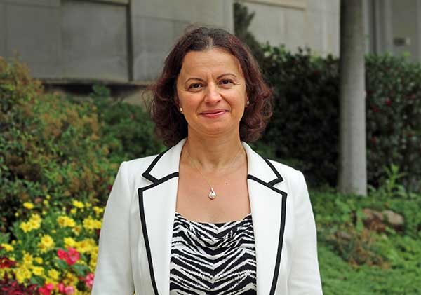

|

- Invited Speaker : Dr. Jinbo Bi (University of Connecticut)
- Invited Speaker : Dr. Mark Chang (AGInception)
- Invited Speaker : Dr. Jake Y. Chen (University of Alabama at Birmingham School of Medicine)
- Invited Speaker : Dr. Jun Deng (Yale University)
- Invited Speaker : Dr. Ani Eloyan (Brown University)
- Invited Speaker : Dr. Constantine Gatsonis (Brown University)
- Invited Speaker : Dr. Bo Huang (Pfizer)
- Invited Speaker : Dr. Kun Huang (Indiana University School of Medicine and Fairbanks School of Public Health)
- Invited Speaker : Dr. Zhongwu Lai (AstraZeneca)
- Invited Speaker : Dr. Qunhua Li (AstraZeneca)
- Invited Speaker : Dr. Jianchang Lin (Takeda Pharmaceuticals)
- Invited Speaker : Dr. Zhonghua Liu (Columbia University)
- Invited Speaker : Dr. Hana Lee (Food and Drug Administration)
- Invited Speaker : Dr. Ying Lu (Stanford University)
- Invited Speaker : Dr. Zhengqing Ouyang (University of Massachusetts, Amherst)
- Invited Speaker : Dr. Weishen Pan (Cornell University)
- Invited Speaker : Dr. Bharat Ramakrishna (CSL Behring)
- Invited Speaker: Dr. Alex Sverdlov (Novartis)
- Invited Speaker: Dr. Rui (Sammi) Tang (Astellas)
- Invited Speaker: Dr. Dana Tudorascu (University of Pittsburgh)
- Invited Speaker: Dr. Jinfeng Zhang (Insilicom)
- Invited Speaker : Dr. Yao Zheng (University of Connecticut)
- Invited Speaker : Dr. Hongtu Zhu (University of North Carolina at Chapel Hill)
Dr. Jinbo Bi
Professor, University of Connecticut
Bi is the Frederick H. Leonhardt Professor of Computer Science and associate head of the department. She holds a Ph.D. from Rensselaer Polytechnic Institute. Her research interests include artificial intelligence, machine learning, data mining, pattern recognition, optimization, computer vision, bioinformatics, medical informatics, drug discovery.
Dr. Mark Chang

Founder, AGInception
Bio: Mark Chang, PhD, is the founder of AGInception. He is an elected fellow of the American Statistical Association with over 25 years of experience as a statistician in the biopharmaceutical industry and academia, where he previously held various positions from Scientific Fellow to Senior Vice President. As an Adjunct Professor for Boston University, he has guided his students on doctoral thesis topics of Adaptive Clinical Trial Design and Artificial Intelligence. He has broad research interests, including adaptive clinical trials, AI, principles of scientific methods, paradoxes, issues and methods in modern biostatistics, and AI software development. He is the inventor and owner of two US patents on AI. His recent publications include research papers and two books on AI: (1) Artificial Intelligence for Drug development, Precision Medicine, and Healthcare (2020), and (2) Foundation, Architecture, and Prototyping of Humanized AI (2023). Dr. Chang has served on editorial boards for statistical journals and is actively engaged in statistical communities promoting biostatistics, including teaching numerous courses on adaptive clinical trial designs and AI/ML. He is a co-founder of the International Society for Biopharmaceutical Statistics.
Dr. Jake Y. Chen
Professor, University of Alabama at Birmingham
Bio: Prof. Jake Y. Chen is the Triton Endowed Professor of Biomedical Informatics and Data Science at the University of Alabama at Birmingham School of Medicine, with joint appointments in Genetics, Computer Science, and Biomedical Engineering. As founding director of UAB’s Systems Pharmacology AI Research Center (SPARC), he has spent over 25 years pioneering AI-driven approaches to computational drug discovery, from network‐based pharmacology models and multi-omics integration frameworks to patient-specific digital twin simulations. His work—drawing on clinical records, genomic assays, and real-world evidence—has led to more than 200 peer-reviewed publications and has directly informed translational studies in precision medicine.
Dr. Chen also serves as Contact MPI for the NIH U54-funded CONNECT consortium (2024–2029), where he leads a multi-institutional effort to build AI-ready biomedical knowledge networks from over $1 billion in NIH-supported data. A trusted advisor to NIH, NSF, FDA, and the U.S. Congress, he has helped shape national and global regulatory frameworks for AI in healthcare. His contributions have earned him fellowships with ACMI, AIMBE, AMIA, and ACM, recognition among the “Top 100 AI Leaders in Drug Discovery & Healthcare,” and the CAST-USA Pioneer Award. As founder of Medeolinx, LLC, he commercialized the GeneTerrain AI platform for pharmaceutical target identification and continues to guide industry and government on integrating AI into drug discovery pipelines.
Dr. Jun Deng

Professor, Yale University
Bio: Dr. Deng is a Professor and Director of Physics Research at the Department of Therapeutic Radiology; a Professor at the Department of Biomedical Informatics and Data Science of Yale University School of Medicine; the Principal Investigator of Yale Smart Medicine Lab; and the President of the Digital Twins for Health Society. Dr. Deng received his PhD from University of Virginia and finished his postdoctoral fellowship at Stanford University. With funding from NIBIB, NSF, NCI, DOE, YCC, and Amazon, Dr Deng’s research has been focused on AI, machine learning, and medical imaging for real-time clinical decision support, digital twins of cancer patients, early cancer detection, as well as AI-empowered mobile health. Dr. Deng has been serving on the editorial board of numerous peer-reviewed journals, on the study sections of NIH, NSF, DOD, ACS, RSNA, ASTRO, and CPRIT since 2005, and as scientific reviewer for various national and international science foundations since 2015. Dr. Deng is an elected fellow of IOP, AAPM, ASTRO, and has been recently selected as one of the Key Thought Leaders of the NCI Cancer AI Accelerator Program, one of the Experts for the NIH AIM-AHEAD PAIR Program, and one of the Mentors for the NIH AIM-AHEAD Research Fellows Program.
Dr. Ani Eloyan

Associate Professor and Vice Chair of Department of Biostatistics, Brown University
Bio: Dr. Ani Eloyan is an Associate Professor and Vice Chair in the Department of Biostatistics at Brown University. Broadly, her research focuses on developing statistical methods for analyzing brain imaging data for large groups of subjects, including matrix decomposition methods, machine learning, analysis of longitudinal brain imaging data, among others. Currently, she is developing machine learning algorithms for imaging-based feature extraction from positron emission tomography data, prediction of cognitive decline, and biomarker estimation in Alzheimer’s disease. Dr. Eloyan has served on editorial boards including as Associate Editor of Journal of American Statistical Association and Biostatistics. Her work has been published in leading statistics and imaging outlets including the Journal of Royal Statistical Society (Series B), JASA, Biostatistics, NeuroImage Clinical, and Alzheimer’s and Dementia. She leads the Biostatistics Core of the Longitudinal Early-onset Alzheimer's Disease Study (LEADS) and is the Principal Investigator of an R01 grant from NIA to develop biomarker estimation methods for multimodal-imaging studies in Alzheimer's Disease. Dr. Eloyan received her PhD in Statistics from North Carolina State University in 2010. She completed a postdoctoral fellowship in the Department of Biostatistics at Johns Hopkins Bloomberg School of Public Health in 2013.
Dr. Constantine Gatsonis
Professor, Brown University
Bio: Constantine Gatsonis, PhD, Henry Ledyard Goddard University Professor of Biostatistic was educated at Princeton and Cornell and joined the Brown faculty in 1995. He is the founding Director of the Center for Statistical Sciences and the founding Chair of the Department of Biostatistics. Dr. Gatsonis is a leading authority on the evaluation of diagnostic and screening tests, and has made major contributions to the development of methods for medical technology assessment and health services and outcomes research. He is a world leader in methods for applying and synthesizing evidence on diagnostic tests in medicine and is currently developing methods for Comparative Effectiveness Research in diagnosis and prediction and radiomics. Dr Gatsonis was Network Statistician of the American College of Radiology Imaging Network (ACRIN) since the formation of the Network in 1999. The Center for Statistical Sciences at Brown operates the Biostatistics Center of ACRIN under his direction. With the recent formation of ECOG-ACRIN, Dr Gatsonis serves as a Group Statistician for the combined collaborative group, which conducts NCI-funded multi-center clinical studies across the spectrum of cancer care. He is the lead statistician for several current and past trials, including the Digital Mammography Imaging Screening Trial (DMIST), the National Lung Screening Trial (NLST), and the newly launched Tomosynthesis Mammography Imaging Trial (TMIST). Dr Gatsonis has contributed extensively to statistical methods for the evaluation of diagnostic tests and biomarkers. He has published on methodology for ROC analysis for detection and prediction and on broader issues of study design in diagnostic test and imaging biomarker evaluation and validation. Dr Gatsonis has long-term involvement in the development of Bayesian statistical methods for problems in biomedical research. He developed and applied hierarchical regression models to the analysis variations in utilization, outcomes, and quality of health care, meta-analysis of diagnostic test accuracy studies, and the variability in diagnostic performance among radiologists and institutions. Dr Gatsonis chaired the Committee on Applied and Theoretical Statistics of the National Academies and is a member of the Committee on National Statistics and the Committee on Reproducibility and Replicability in Science. Previously, he co-chaired the Committee on the Needs of the Forensic Sciences Communityand served on the Board of Mathematical Sciences and Applications and several IOM Committees. Since 2016 Dr Garsonis is a statistical consultant for the New England Journal of Medicine. He was the Founding Editor-in-Chief of Health Services and Outcomes Research Methods, and currently serves as Associate Editor of the Annals of Applied Statistics and Academic Radiology. . Dr. Gatsonis was elected fellow of the American Statistical Association and received a Long-Term Excellence Award from the Health Policy Statistics Section of the ASA.
Dr. Bo Huang

Executive Director, Statistics Group Head of Non-malignant Hematology, Pfizer
Bio: Dr. Bo Huang is Executive Director, Statistics Group Head of Non-malignant Hematology at Pfizer. He has more than 17 years of industry experience across all stages of clinical development in oncology and rare diseases, and successfully led a number of global submissions, including the first Pfizer submission in the FDA’s Real-Time Oncology Review pilot program. He is a recognized scientific leader in developing and applying innovative quantitative methods in drug development, with over 100 scientific publications in medical and statistical journals. In addition, he has been serving as Guest Editor/Associate Editor for several scientific journals, serving as Industry Co-Chair of the 2021 Regulatory-Industry Statistics Workshop, and was the elected 2024 Program Chair for the ASA Biopharmaceutical Section. He was also an elected Board Director of the International Chinese Statistical Association (2016-2019). Bo received his PhD in Statistics from the University of Wisconsin-Madison, and is an elected Fellow of the American Statistical Association (2023).
Dr. Kun Huang

Professor, Indiana University
Bio: Dr. Kun Huang received his BS degrees in Biological Science and Computer Science from Tsinghua University in 1996 and his MS degrees in Physiology, Electrical Engineering, and Mathematics all from University of Illinois at Urbana-Champaign (UIUC). He then received his PhD in Electrical and Computer Engineering from UIUC in 2004 with a focus on computer vision and machine learning. He was a faculty member in the Department of Biomedical Informatics at The Ohio State University (OSU) from 2004 to 2017 where he served as the Associate Dean for Genome Informatics in the College of Medicine. He joined Indiana University School of Medicine as Director for Data Science and Informatics of the Precision Health Initiative in 2017. Currently he is the IUSM PHI Endowed Chair for Genomic Data Science, Professor and Chair of the Department of Biostatistics and Health Data Science at Indiana University School of Medicine and Fairbanks School of Public Health. He is also the Associate Director for Data Science of the IU Simon Comprehensive Cancer Center and a member of the Regenstrief Institute. His research interests include bioimage informatics, computational pathology, translational bioinformatics, and heath data science. He is an elected Fellow of American Institute of Medical and Biological Engineering (AIMBE) and published more than 250 research papers.
Dr. Zhongwu Lai
Executive Director, AstraZeneca
Bio: Dr. Zhongwu Lai is currently an executive director at AstraZeneca, leading a team of data scientists to advance AstraZeneca’s oncology portfolio through advanced data analysis. He has more than 25 years of industry experience in biopharma, and has made significant contributions to the field of bioinformatics, genomics, NGS, and translational science in cancer research. He has authored and co-authored over 50 scientific publications, with over 40k citations. One of his achievements is the development of VarDict, a versatile and novel variant caller designed for both DNA and RNA sequencing data. VarDict is widely recognized for its ability to simultaneously detect single nucleotide variants (SNVs), multi-nucleotide variants (MNVs), insertions and deletions (InDels), and complex variants, making it a critical tool in next-generation sequencing for cancer research. In his early industry career, he also participated in the Human Genome Project, and was one of the authors of the landmark Science publication on the human genome sequence in 2001. Dr. Lai is an expert in cancer genomes across multiple cancer types, including lung, breast, gastric, prostate and pancreatic cancers. His >10 year experience in development of olaparib, a PARP inhibitor, has made him a renowned scholar in BRCA mutation detection and interpretation. He has contributed significantly to the development of olaparib, osimertinib, durvalumab, tremelimumab, and T-DXd.
Dr. Qunhua Li

Professor, Penn State University
Bio: Qunhua Li is a professor in Dept of Statistics and Huck Institute of life sciences at Penn State University. She received her PhD from University of Washington and had her postdoc trading in University of California at Berkeley before joining Penn State University.
Dr. Zhonghua Liu
Assistant Professor, Columbia University
Bio: Dr. Zhonghua Liu is an Assistant Professor in the Department of Biostatistics at Columbia University, a member of the Data Science Institute, and an affiliate of the New York Genome Center. His research focuses on developing robust statistical and AI-integrated methods for causal inference in high-dimensional biomedical data. At the intersection of statistics, machine learning, and genomics, Dr. Liu’s work addresses critical challenges in precision medicine, including identifying causal biomarkers and accelerating therapeutic discovery. His recent projects integrate deep learning with semiparametric inference and Mendelian randomization to uncover causal relationships from multi-omics data and to predict 3D structural alterations of disease-associated proteins using AlphaFold3, with applications to Alzheimer’s disease and drug target prioritization. Dr. Liu earned his doctorate in Biostatistics and Epidemiology from Harvard University.
Dr. Jianchang Lin
Executive Director, Head Statistical and Quantitative Sciences, Neuroscience & Chief Statistical Office, Takeda Pharmaceuticals
Bio: Jianchang Lin, PhD, is an Executive Director, Head Statistical and Quantitative Sciences, Neuroscience & Chief Statistical Office at Takeda Pharmaceuticals with extensive drug development experience across various therapeutic areas in Oncology, Neuroscience, Cell Therapy, Immunology, and Rare Diseases including key contributor for several successful drug global approvals and commercialization in US, EU, Japan and China. He is passionate about innovation and the integration of advanced data and quantitative methodologies—including novel trial designs, real-world data (RWD/RWE) and AI/ML—to accelerate development timelines, reduce risk, and enhance portfolio decision-making. He has published 80+ peer-reviewed articles in top statistical and clinical journals such as Biometrics, Statistics in Medicine, NEJM, JAMA Oncology, JCO, Blood, and Cancer Discovery. In addition, he has served as editor of two Springer books, Industry co-chair for 2024 Regulatory-Industry Statistics Workshop (RISW) and currently serving as Associate Editor for the Journal of Biopharmaceutical Statistics, Statistics in Biosciences, Program Chair for ASA Biopharmaceutical Section, Board of Director for ICSA, etc. Dr. Lin was the Principal Investigator for the MIT–Takeda Program (2020–2024), leading the development of novel AI/ML applications in drug development and an Elected Fellow of the American Statistical Association (2025).
Dr. Hana Lee
Senior Statistical Reviewer in the Office of Biostatistics (OB) at the Center for Drug Evaluation and Research, Food and Drug Administration
Bio: Hana Lee, PhD, is a Senior Statistical Reviewer in the Office of Biostatistics (OB) at the Center for Drug Evaluation and Research (CDER), FDA. She leads and oversees various FDA-funded projects that support the development of the agency’s real-world evidence (RWE) program. She also serves as a co-lead of the RWE Scientific Working Group of the American Statistical Association (ASA) Biopharmaceutical Section, FDA public-private partnership involving scientists from the FDA, academia, and industry to advance the understanding of real-world data (RWD) and RWE to support regulatory decision-making. In 2024, she received the FDA’s most prestigious award for excellence in advancing and promoting statistical innovation in the use of RWD/RWE for regulatory decision-making.
Dr. Ying Lu
Stanford University
Bio: Ying Lu, Ph.D., is Professor in the Department of Biomedical Data Science, and by courtesy in the Department of Radiology and Departement of Health Research and Policy, Stanford University. He is the Co-Director of the Stanford Center for Innovative Study Design and the Biostatistics Core of the Stanford Cancer Institute. Before his current position, he was the director of VA Cooperative Studies Program Palo Alto Coordinating Center (2009-2016) and a Professor of Biostatistics and Radiology at the University of California, San Francisco (1994-2009). His research areas are biostatistics methodology and applications in clinical trials, statistical evaluation of medical diagnostic tests, and medical decision making. He serves as the biostatistical associate Editor for JCO Precision Oncology and co-editor of the Cancer Research Section of the New England Journal of Statistics and Data Science. Dr. Lu is an elected fellow of the American Association for the Advancement of Science and the American Statistical Association. Dr. Lu initiated the Stat4Onc Annual Symposium with Dr. Ji and Dr. Kummar in 2017 and is the PI of the R13 NCI grant for this conference.
Dr. Zhengqing Ouyang

Associate Professor: University of Massachusetts, Amherst
Bio: Zhengqing Ouyang is an Associate Professor of Biostatistics in the Department of Biostatistics and Epidemiology of the School of Public Health and Health Sciences at the University of Massachusetts Amherst. Dr. Ouyang obtained his PhD degree from Stanford University under the guidance of Prof. Wing Hung Wong followed by a postdoctoral training jointly mentored by Prof. Howard Chang and Prof. Michael Snyder at Stanford University School of Medicine. Dr. Ouyang has received several awards, including the Genome Technology Young Investigators of the Year Award from GenomeWeb, the Research Starter Grant in Informatics Award from PhRMA Foundation, and the NIGMS Maximizing Investigators' Research Award. Dr. Ouyang’s research lies in the development and application of statistical methods for analyzing the spatial interactions and configurations of the genome towards understanding gene regulation and cellular activities.
Dr. Weishen Pan

Postdoctoral Associate, Cornell Univeristy
Bio: Dr. Weishen Pan is a postdoctoral associate in the Department of Population Health Sciences at Weill Cornell Medicine. He received his Ph.D. from Tsinghua University in 2022. His long-term research interest is machine learning and artificial intelligence for biomedicine, with a particular focus on developing algorithms for computational medicine and implementing them in healthcare systems. His recent work has centered on building multi-agent AI systems to support clinical trials. Dr. Pan was the technical lead of the winning team in the 2022 AACC Data Challenge on PTHrP prediction. His research has been published in leading clinical journals, including Nature Communications, NPJ Digital Medicine, and Clinical Chemistry, as well as top computer science conferences such as KDD, ICLR, and NeurIPS.
Dr. Bharat Ramakrishna
Clinical Development Leader, CSL Behring
Bio: Dr. Bharat Ramakrishna is an infectious disease specialist and physician–scientist who leads late-stage clinical development at CSL Behring. With training in translational research, epidemiology, and computational biology, he integrates data science and real-world evidence to refine and innovate late-stage clinical development strategies and support regulatory negotiations with the FDA. Dr. Ramakrishna previously trained at the New England Journal of Medicine and as an invited speaker at MIT and Harvard Medical School. He is completing a Master of Public Health at the Johns Hopkins Bloomberg School of Public Health. His professional interests spanning causal inference, regulatory science, and equitable access to innovation.
Dr. Alex Sverdlov
Senior Director, Statistical Scientist, Novartis
Bio: Alex Sverdlov, PhD is a Senior Director, Statistical Scientist at Novartis. With 18 years of career in the biopharmaceutical industry, Alex has been actively involved in methodological research and applications of innovative statistical approaches in drug development. He has co-authored over sixty refereed articles, edited three monographs ("Modern Adaptive Randomized Clinical Trials”, “Digital Therapeutics”, and “Development of Gene Therapies”), and co-authored a book “Mathematical and Statistical Skills in the Biopharmaceutical Industry: A Pragmatic Approach”.
Dr. Rui (Sammi) Tang

Senior Vice President and Global Head of Quantitative Sciences and Evidence Generation, Astellas Pharmaceuticals
Dr. Rui (Sammi) Tang is a seasoned drug developer and innovative pharmaceutical leader who has contributed to the successful development and approval of numerous therapies—bringing medicines from research to market that now reach millions of patients every day. With a proven track record of building high-performing teams and driving scientific and operational innovation, she delivers data-driven solutions that accelerate drug development and improve global health outcomes.
As Senior Vice President and Global Head of Quantitative Sciences and Evidence Generation (QSEG) at Astellas Pharmaceuticals, Dr. Tang leads the company’s global data and evidence strategy across quantitative analytics, epidemiology, real-world evidence (RWE), biostatistics, programming, medical writing, scientific communication, data systems & enablement, and data management. She is at the forefront of applying Generative AI in regulatory and clinical documentation, AI/ML-powered analytics, and external data to optimize study design and development efficiency.
She also serves as Site Head of the Astellas Life Sciences Center (ALSC) in Cambridge, where she oversees full site operations and strategic direction across integrated teams including Research, Medical & Development, Business Development, and IT. Under her leadership, the ALSC drives innovation through internal collaboration and external partnerships with incubator labs, biotech start-ups, and academic institutions.
A dedicated scientific leader, Dr. Tang serves on the Executive Committee for Data Science & AI at the American Statistical Association (ASA) and is co-founder of DahShu, a global nonprofit advancing data science research and education with over 5,000 members.
Previously, Dr. Tang was Vice President and Global Head of Biometrics at Servier Pharmaceuticals and Therapeutic Area Head of Biostatistics at Shire. Earlier in her career, she contributed to drug development and statistical innovation at Vertex, Amgen, Mayo Clinic, and Merck—experiences that shaped her cross-functional leadership approach.
Dr. Tang holds a PhD in Statistical Genetics from Michigan Technological University and an Executive MBA from MIT Sloan. She is also an Adjunct Professor at Yale University School of Public Health. With over 50 peer-reviewed publications and multiple patents, she is widely recognized for combining scientific depth with strategic leadership to deliver transformative therapies that improve lives worldwide.
Dr. Dana Tudorascu

Associate Professor, University of Pittsburgh
Bio: Dr. Tudorascu received her PhD in Biostatistics from University of Pittsburgh, a MS in Computational Mathematics from Duquesne University and a BS in Mathematics from University of Craiova in Romania. She is currently an Associate Professor of Psychiatry and Biostatistics in the Department of Psychiatry at University of Pittsburgh where she Co-Leads the Study Design and Data Analysis Group. She is the Leader of the Biostatistics Core for the “The Role of Astrogliosis in Aging and the Pathological and Clinical Progression of Alzheimer’s Disease” program, Co-Leads the Data Management and Statistics Core for ADRC at Pitt as well as the Biostatistics and Data Management Core for Alzheimer’s Disease Biomarker’s Consortium-Down Syndrome (ABC-DS), an international multisite study. Dr. Tudorascu’s research focuses on developing methods for data harmonization for multi scanner, multi center neuroimaging studies as well as on improving brain tissue classification in presence of white matter lesions and atrophy in neuroimaging studies of Alzheimer’s disease. She is currently principal investigator of a National Institute on Aging-funded R01 grant focused on statistical methods to improve reproducibility and reduce technical variability in multimodal imaging studies of Alzheimer’s disease. Dr. Tudorascu collaborates widely with colleagues in psychiatry, biostatistics, neurology, radiology, among many other departments at Pitt as well as outside institutions. Dr. Tudorascu’s activities include training others in statistical methods used in multimodal imaging studies of neuropsychiatric disorders
Title: Beyond Large Language Models: Building Trustworthy AI for Drug Development with a Large-scale Biomedical Knowledge Graph
Speaker: Dr. Jinfeng Zhang
Founder & CEO at Insilicom
Bio: Dr. Jinfeng Zhang received his Ph.D. in Engineering from the University of Illinois at Chicago in 2004 and completed postdoctoral training in Statistics at Harvard University from 2004 to 2007. He joined the Department of Statistics at Florida State University as a faculty member in 2007, where he conducted research at the intersection of machine learning and biology for over 15 years. In the summer of 2025, Dr. Zhang transitioned full time to his startup, Insilicom LLC, which develops cutting-edge AI systems for drug discovery, pharmacovigilance, and biomedical knowledge integration. His research spans biological information extraction, natural language processing, biomedical knowledge graphs, and AI for science, with a consistent focus on building trustworthy, data-driven methods for advancing life sciences. Dr. Zhang and his team have earned international recognition through multiple top awards in biological NLP and AI challenges, including the LitCoin NLP Challenge organized by NIH and NASA (2022), the BioCreative Challenge VIII Knowledge Graph Track (2023), and the BioASQ 13B Biomedical Question Answering Challenge (2025). At Insilicom, he leads the development of large-scale biomedical knowledge graphs and AI platforms such as IKraph, IKnow, and IDEAL, which are redefining how AI can support scientific discovery and drug development.
Dr. Yao Zheng

Associate Professor, University of Connecticut
Bio: Dr. Yao Zheng is an Assistant Professor of Statistics at the University of Connecticut. She is a recipient of the NSF CAREER Award, the Makuch Faculty Fellowship, and the IMS New Researcher Travel Award. She is particularly interested in advancing methodologies that address the challenges posed by temporal dependence and dynamic structure in modern datasets. Dr. Zheng earned her BS and PhD from the Department of Statistics and Actuarial Science at the University of Hong Kong. Before joining UConn in 2019, she spent two years at Purdue University as a postdoctoral researcher and Visiting Assistant Professor.
Dr. Hongtu Zhu
Kenan Distinguished Professor, University of North Carolina at Chapel Hill
Bio: Dr. Hongtu Zhu is the Kenan Distinguished Professor of Biostatistics, Statistics, Radiology, Computer Science, and Genetics at the University of North Carolina at Chapel Hill. He was a DiDi Fellow and Chief Scientist of Statistics at DiDi Chuxing between 2018 and 2020 and held the Endowed Bao-Shan Jing Professorship in Diagnostic Imaging at MD Anderson Cancer Center between 2016 and 2018. He is an internationally recognized expert in statistical learning, medical image analysis, precision medicine, biostatistics, artificial intelligence, and big data analytics. He received an established investigator award from the Cancer Prevention Research Institute of Texas in 2016, the INFORMS Daniel H. Wagner Prize for Excellence in Operations Research Practice in 2019, and the COPSS 2025 Snedecor Award. He has published more than 340 papers in top journals, including Nature, Science, Cell, Nature Genetics, Nature Communication, PNAS, AOS, JASA, Biometrika, and JRSSB, as well as presenting 58+ conference papers at top conferences, including meetings for Neurips, ICLR, ICML, AAAI, and KDD. He is the coordinating editor of JASA and the editor of JASA ACS.
DahShu 2026 ContactFor all general questions about the symposium, including program details, registration, and logistics: Email: dahshu2025@gmail.com | Our Social Networks |